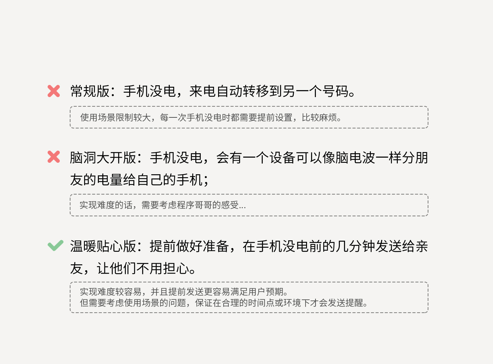
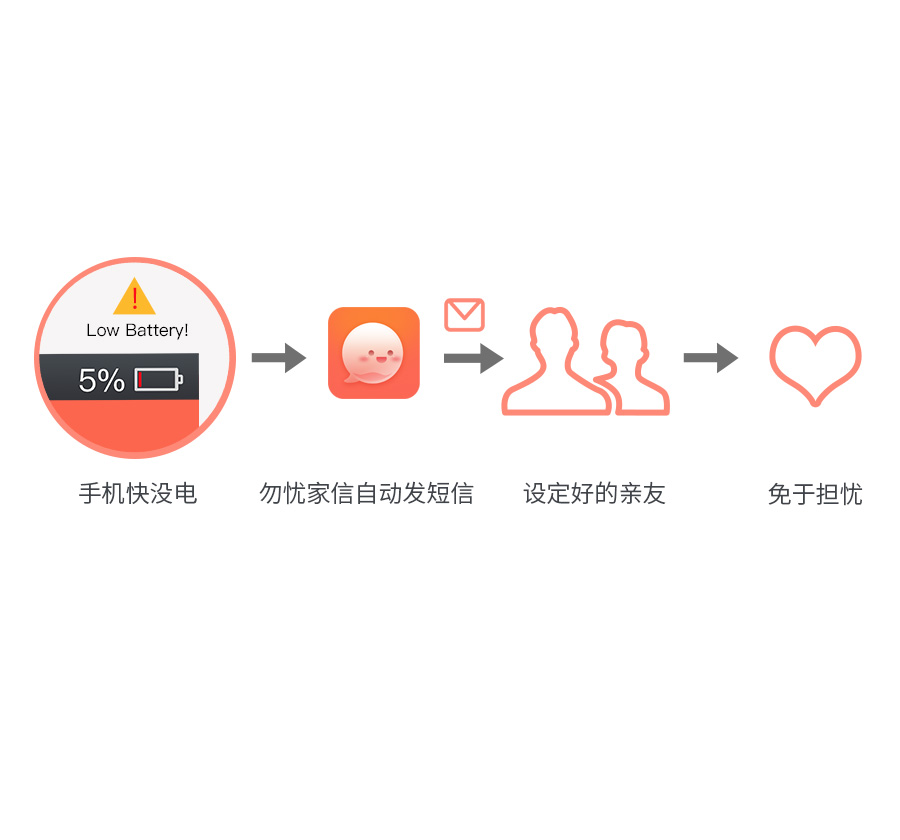
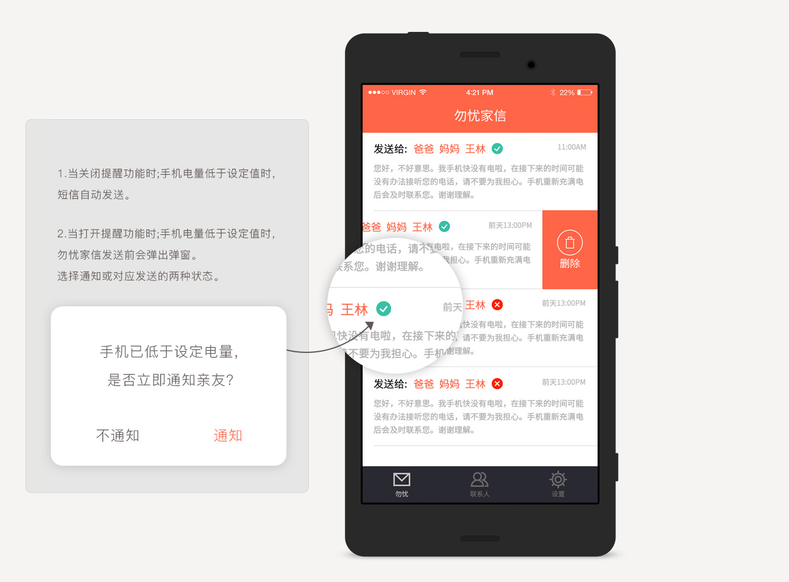
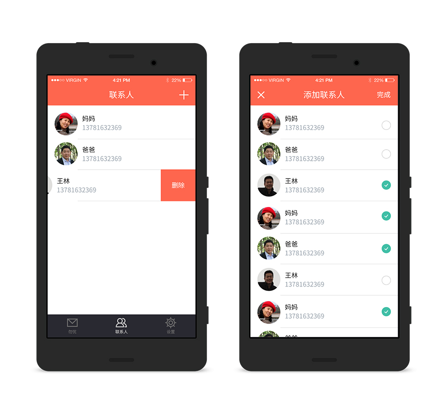
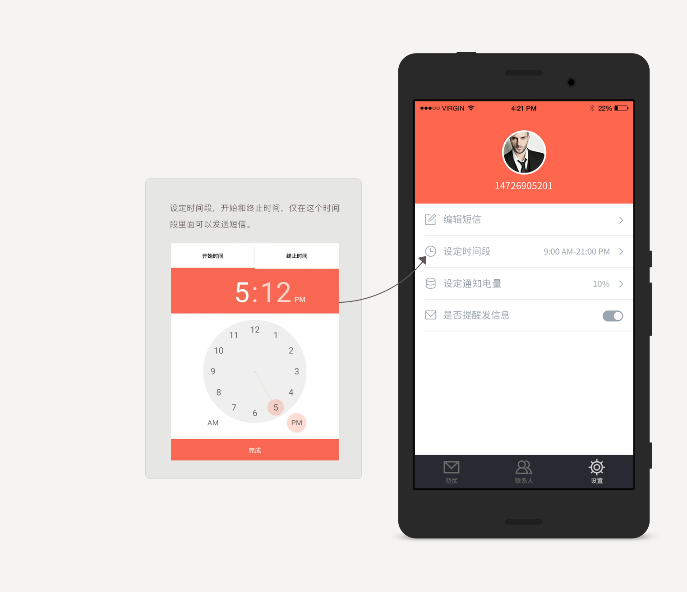

“你知道联系不上你，我有多担心吗？”
因为手机没电错过父母和朋友的来电，他们会异常担心；
因为工作繁忙，忘记给手机充电，联系不上而错失机遇；
出差在外拼搏，手机关机，孩子打不通你的电话，让他们很失望...
手机电量过低关机，导致无法进行沟通，是一种糟糕的用户体验。
为了深入了解情况，我针对不同的用户做了访谈
思维整理
根据访谈的结果，针对手机没电或关机的问题，我们设想了几种解决方案：
1.常规适用版；
2.脑洞大开版；
3.温暖贴心版。
综合考虑后，我们选择了最后一种作为实现方式。

流程设计
勿忧家信的核心流程简单清晰：监测用户手机电量，发现低于特定电量后，自动发送预制好的短信给特定的联系人。
另外，考虑到使用场景，增加了发送前提醒以及特定时间段不发送短信等约束机制

发送列表页
在该列表中，可以查看发送的短信内容和联系人，有发送状态提醒。

选择联系人
选择手机没电时，发送短信的亲友。手机中联系人数据直接从手机通讯录中获取，找寻人物轻松简单。

设置页面
设置发送时间段，仅在设定时间内手机才会发送短信。
